The world of software development has evidenced drastic changes in the development platforms and programming languages since 2010. A huge support for the mobile development community has been provided by the pioneer tech companies such as Google, Apple etc.
Demands of modern developers gave rise to the more powerful and more advanced high level programming languages like Kotlin and Swift. Every modern programming language tried to satisfy the requirements of developer in order to produce much faster, reliable and flexible software systems.
Hence, the languages offer lots of similarities wrapped up in different flavours. As Iphones and Android smartphones has covered majority of the market. Kotlin (Android) and Swift (IOS) became the two highlights in the world of mobile development.
Lets talk about how close the two famous programming languages are in design and detail.
VARIABLE ASSIGNMENT
Both of them resembles each other in syntax. Swift uses let to initialize constants where as Kotlin uses val for the same purpose.
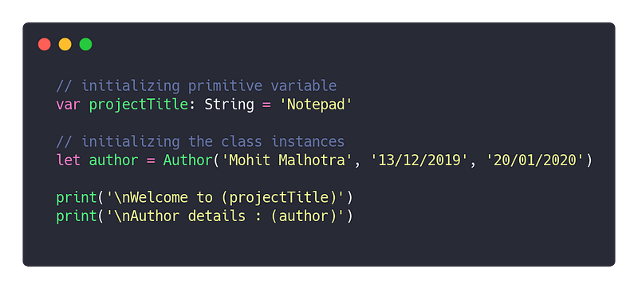
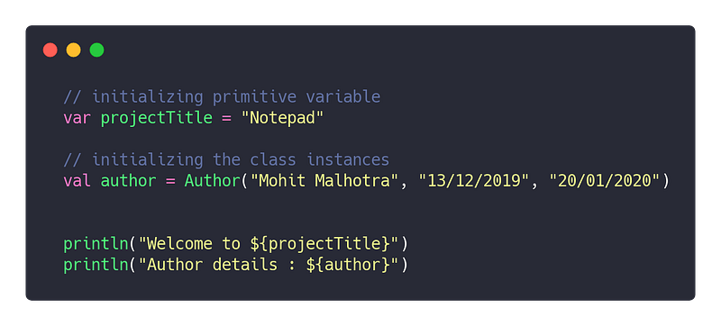
CONDITIONAL STATEMENTS
Conditional statements were introduced by E.W. Drijkistra as he felt the need to replace the classic go-to statement making the control flow much more readable. There after languages like C/C++ revolutionised the conditional statements. Now, Swift and Kotlin has offered much more simpler syntax.
IF-ELSE
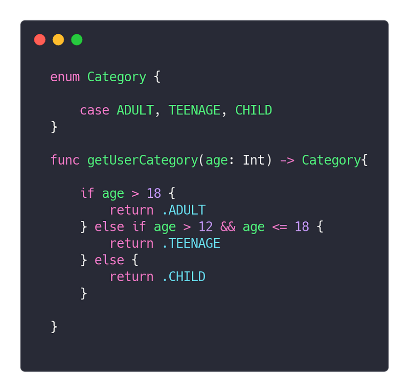
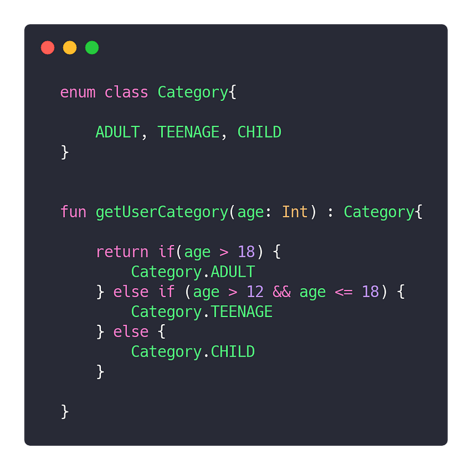
Unlike Kotlin, Swift offer intelligent syntax but allowing developers to eliminate the need to write Enum name while accessing its type.
SWITCH- CASE
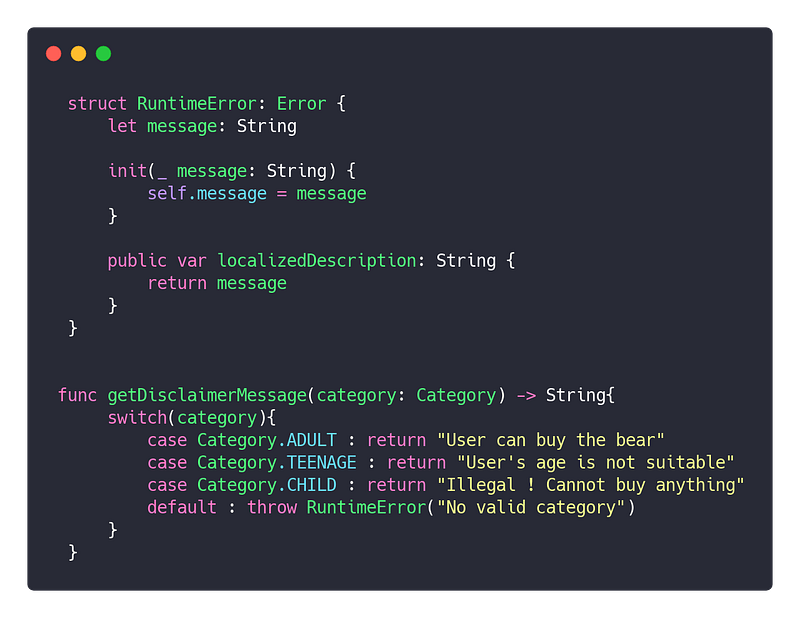
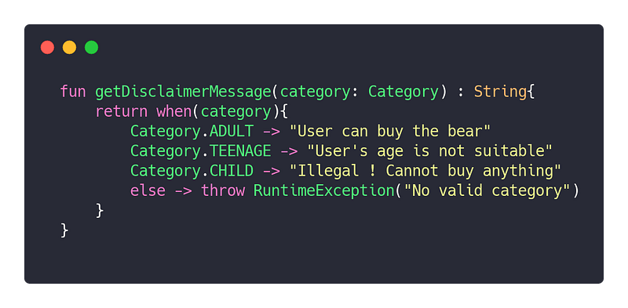
But on the other hand, Kotlin succeeds in offering conditional expression which can be very handy in reducing LOC (lines of code) and make code much more compact.
FUNCTIONS
Degree of ease to write functions in any language gives you an idea of extent of simplicity of syntax. Both of the languages provide similar syntax for defining functions.
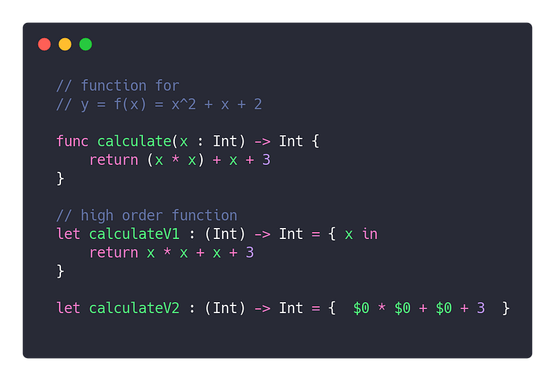
Unlike Java or C, functions in Kotlin and Swift are considered as first level citizens ie. they can be passed as an argument and can be returned from a block of code.
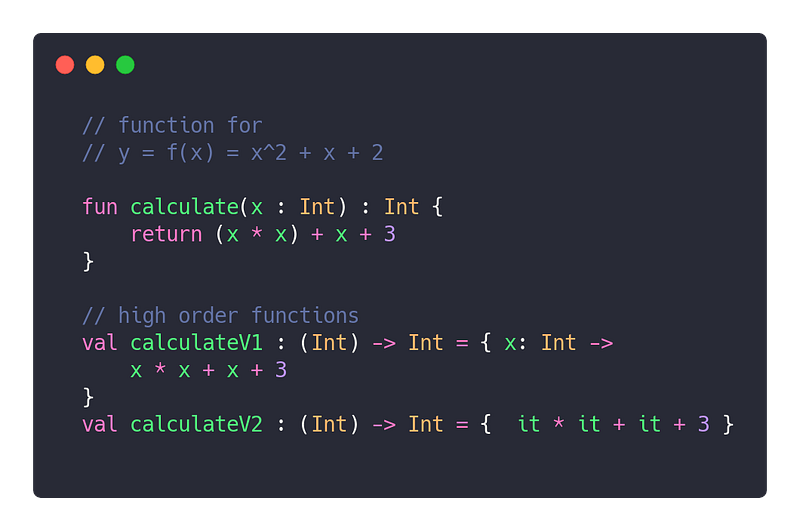
NULL SAFETY OPERATORS
Both of the language offer null safety by allowing the users to create optional datatypes that can be nullable but should be unwrapped before invocation.
When we considering unwrapping of optionals, it can be done in two ways :
- Safe unwrapping ( ?. )
- Forced unwrapping ( !. )
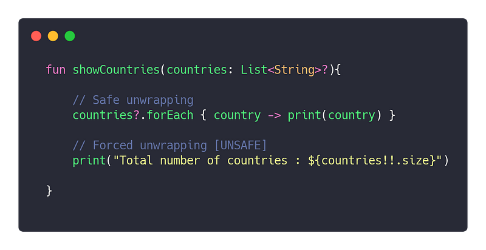
Swift offers two other types of unwrapping also
3. Implicit unwrapping
4. Conditional unwrapping
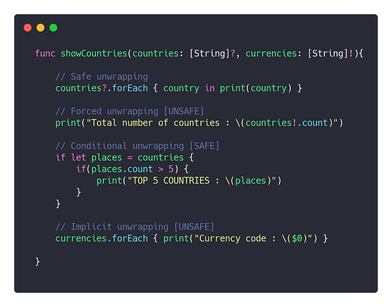
Such operators allow the developer to avoid NPE (NullPointerException) to a major extent and force the team of developers to code in a controlled manner.
ENCAPSULATION
In designing softwares , developers majorly consider two kind of high level encapsulations :
- Abstraction ( such as Abstract classes, Interfaces, Protocols )
- Concrete definition ( such as Classes, Structures )
ABSTRACTION
Interface and protocol are somewhat analogical in Kotlin and Swift respectively. Both of them offers standardisation in code design.
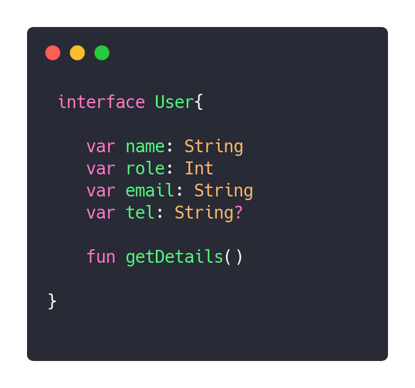
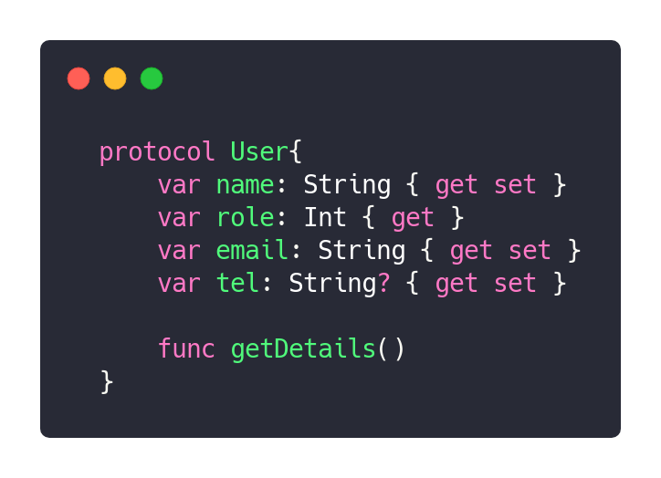
In Swift, you can explicitly define the exposed setters getters for a property of protocol.
CONCRETE DEFINITION
Classes and structures are used to wrap characteristics and behaviour together in order to replicate real world objects. Defining such concrete definitions is similar in both languages
Properties of OOPS (Object Oriented Programming) can be exploited using such encapsulations.
Explaining such properties in detail is not relevant in this article. Hence, the most famous OOPS property ‘ Inheritance ‘ can describe the grammer of both the languages.
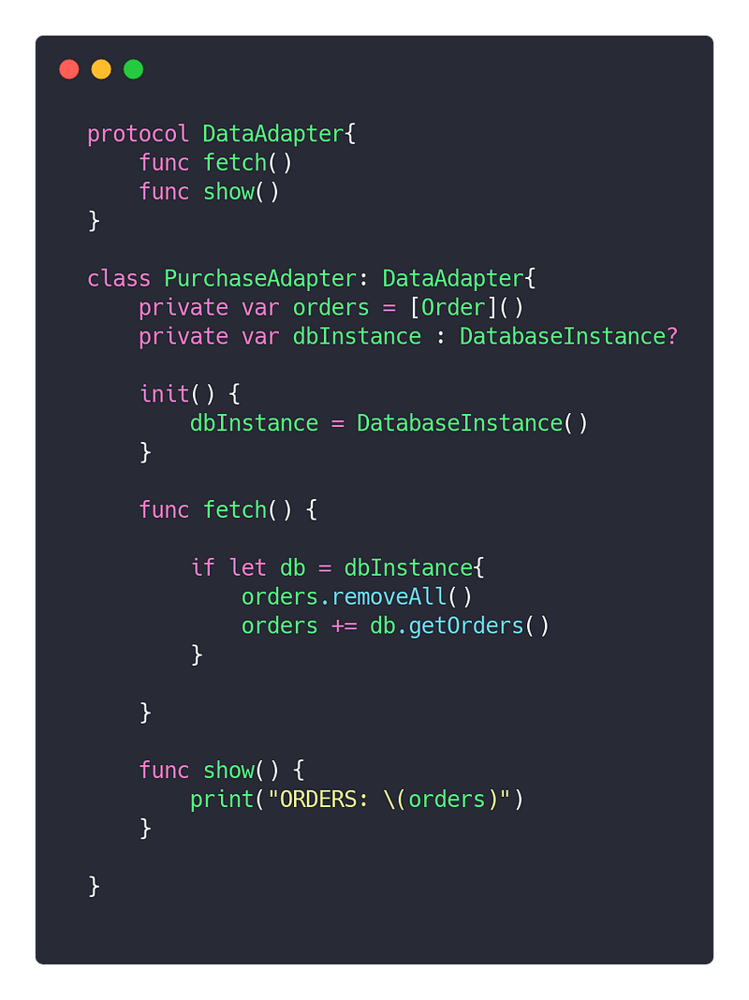
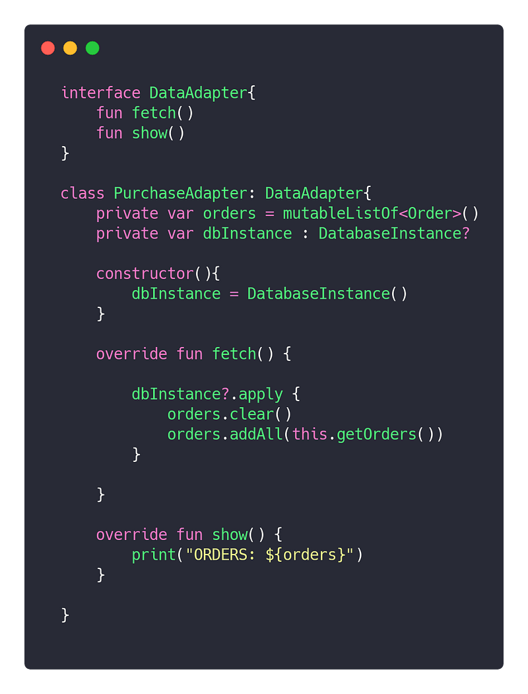
COLLECTIONS
Developer spend 50% of their time in developing and using data structures in a language. Designer of any computer language keep this in mind that process of populating and consuming the data structures in any language should be versatile and offer as much functionality as possible.
Following snippets demonstrate the four fundamental operations CRUD over a standard data structure ‘ List ’ :
- Create
- Read
- Update
- Delete
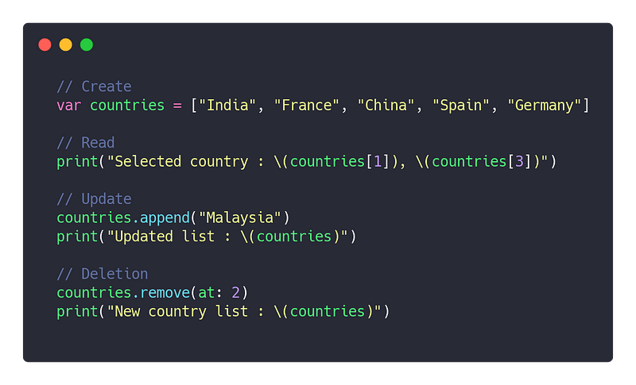
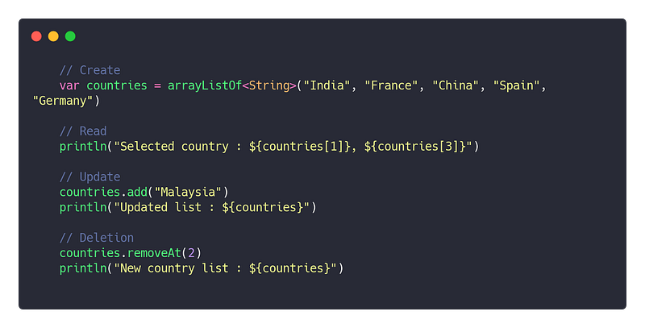
Kotlin appears to offer much more operations over data structures if the developer can utilise Java streams in a right manner
EXTENSIONS
Sometimes, developer need to extend the functionality by adding features to a certain existing structure. Kotlin and Swift take care of this requirement by adding extensions which enhance the project scalability to a large extent.
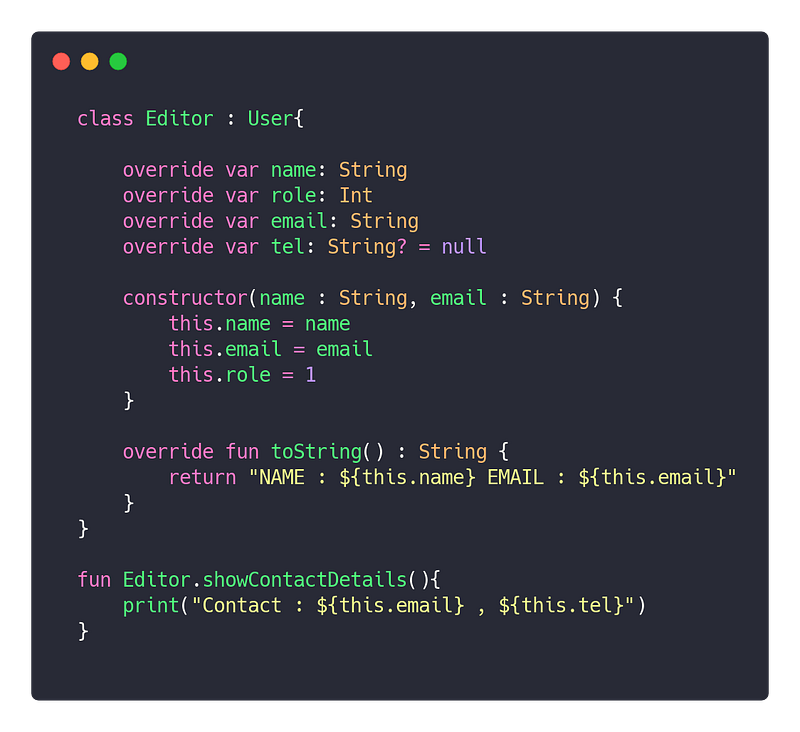
Swift allows extension block rather than just methods which allows developers to add data variables and make extensions much more versatile.
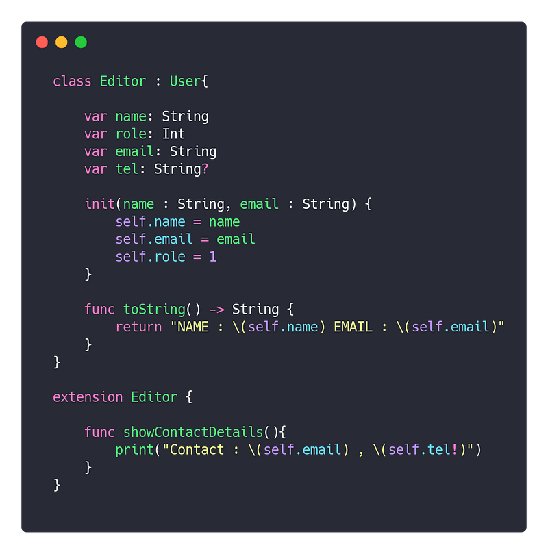
ADVANCED OPERATIONS ON DATA
Various operations are generally performed over collection of data. Modern day language try to offer concise and powerful advanced operations that allow the developer to avoid iterating over the data explicitly by writing a chunk of code with nested loops. Such advanced operations are :
- Filtering
- Sorting
- Mapping
- Reducing (Conversion)
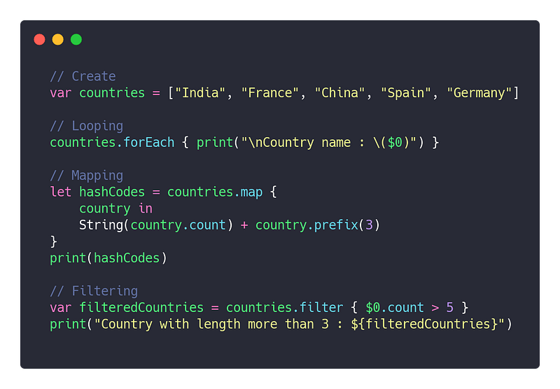
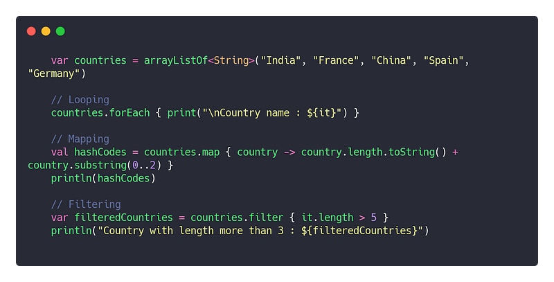
CONCLUSION
You can observe in few scenarios that Koltin offer a little more power to the developers to write much more concise code as it is designed few years after the Swift. Kotlin and Swift can be considered few of the most evolved programming languages that comprise of best features from languages like Javascript, C++, Java etc.
Due to the similarity in syntactic structure, developers can migrate from Swift to Kotlin and vice versa in order to expand their domain of programming skills.
“ In a bigger picture, both languages are designed to have much similar syntax. It looks like the prototype for modern day high level programming languages have been defined which we can expect to observe in upcoming languages. “